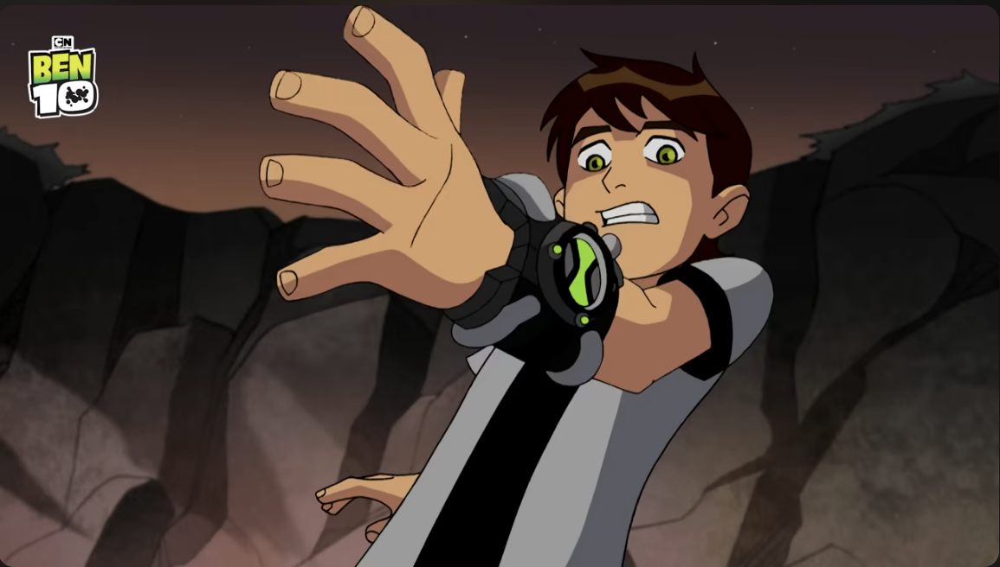
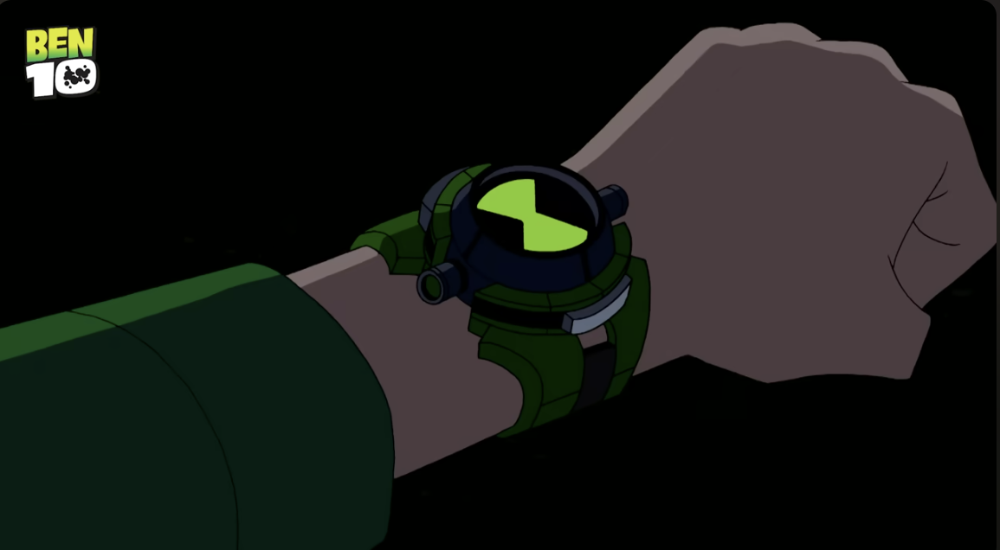
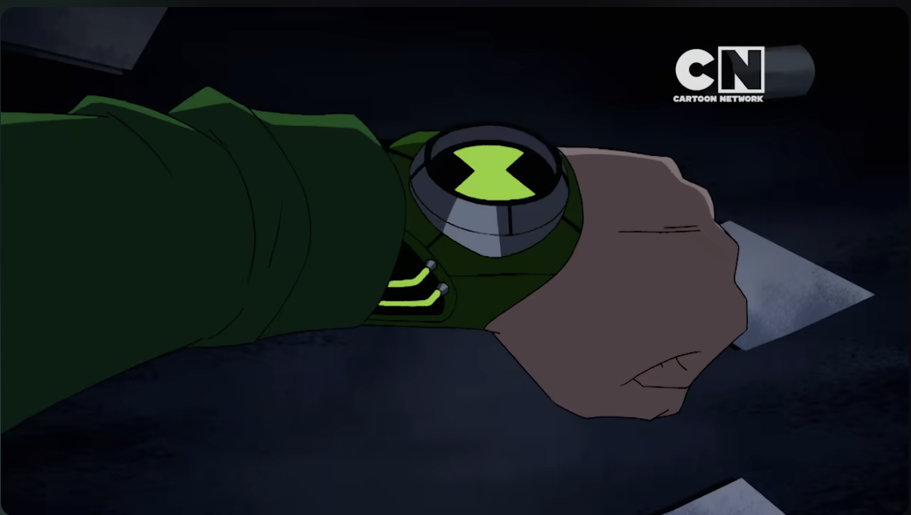
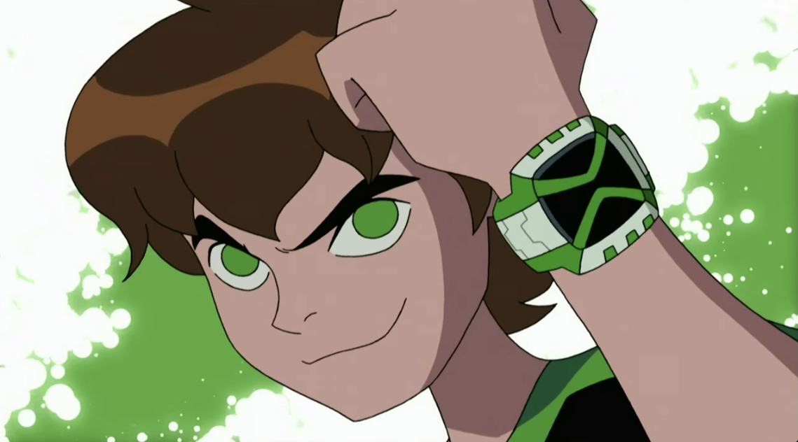

About the Omnitrix
The Omnitrix is the powerful alien device that allows Ben Tennyson to transform into different alien species. Throughout the Ben 10 franchise, Ben uses several versions of the Omnitrix, each with new features, upgrades, and alien forms.
This page explains the four major versions of the Omnitrix seen across the main Ben 10 series.
Prototype Omnitrix (Classic Series)

The Prototype Omnitrix is the original device Ben discovers in the classic series. It was created by Azmuth as an early model meant to promote peace by letting different species understand each other. Despite being a prototype, it contains a wide variety of alien DNA.
Key Features:
- Green hourglass symbol
- White and black color scheme
- 10 main aliens at the start
- Occasional glitches and random transformations
- Limited control over alien selection
Recalibrated Omnitrix (Alien Force)

After a time skip, the Omnitrix recalibrates itself into a sleeker, more advanced form. This version gives Ben access to a new set of aliens and much better control over the device.
Key Features:
- Black and green color scheme
- Dial-based alien selection with holograms
- More stable transformations
- Offered a new alien playlist with new aliens like Swampfire, Echo Echo, Humungousaur, Jetray, Big Chill, Chromastone, Brainstorm, Spidermonkey, Goop, and Alien X.
Ultimatrix (Ultimate Alien)

The Ultimatrix is a more powerful device created by Albedo. It allows Ben to evolve certain aliens into their “ultimate” forms, granting them enhanced powers and new abilities.
Key Features:
- Green and black with longer gauntlet like design
- The Ultimatrix offered a specialized alien playlist featuring evolved "Ultimate" forms of existing DNA samples, including Ultimate Swampfire, Ultimate Spidersmonkey, Ultimate Big Chill, Ultimate Humungousaur, Ultimate Cannonbolt, and Ultimate Echo Echo.
- More combat-focused than the Omnitrix
- Contains a large DNA library
Omniverse Omnitrix (Omniverse)

In Omniverse, Ben receives a brand-new Omnitrix designed by Azmuth. This version is more advanced, more stable, and includes a massive roster of aliens from across the franchise.
Key Features:
- Bright green and white design
- Holographic pop up dial
- Better interface and transformation control
- New aliens offeredlike Bloxx, Feedback, Gravattack, Shocksquatch, Crashhopper, Ball Weevil.